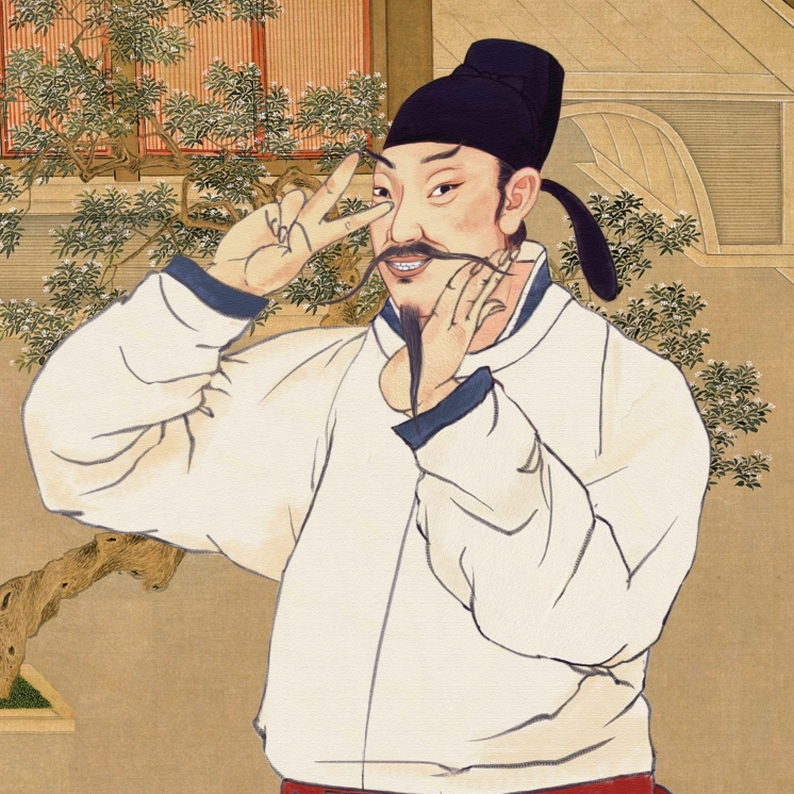

相傳李白少年時便顯露才華，「十歲通詩書」、「十五好劍術」、「三十成文章」。
李白少年時代就「觀奇書」，「遊神仙」，「好劍術」，有多方面的才能和興趣，唐中宗神龍元年（705）舉家遷居四川綿州，曾任翰林供奉。因稱「李翰林」。賀之張譽為「天上謫仙人」，後人又稱「李謫仙」。
然而唐玄宗只讓李白待詔翰林，作文學侍從之臣，李白的大志無法實現。李白性格傲岸不，也不能忍受「摧眉折腰事權貴」的生活。三年後李白因遭讒毀，自請還山，離開長安。他只能游山訪仙，痛飲狂歌，以排遣懷才不遇的憂憤。但他始終沒有放棄建立偉業，成為非凡人物的理想。
安史之亂爆發後，李白曾應邀入永王李璘幕府，又以為獲得了建功立業的機會，詠出「但用東山謝安石，為君談笑靜胡沙」的豪邁詩句。當安史之亂告一段落時，政權內鬥卻展開，永王遭唐肅宗消滅後，李白也受牽連入獄，但所幸被其他官員所救，後來在流放夜郎的途中遇赦。直到六十一歲時，李白還請求從軍入幕，希望能有「一割之用」，卻因病在途中折回，未能如願。六十二歲時在他的族叔當涂縣（安徽馬鞍山）令的李陽冰家離世。
